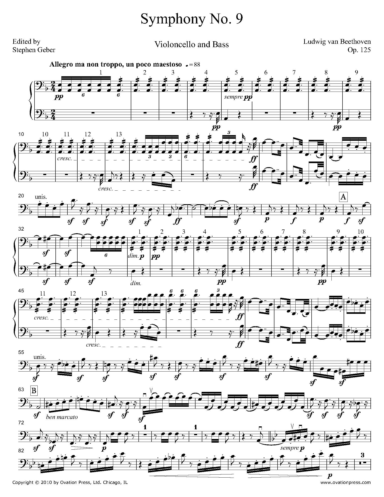

Thông tin tác phẩm
- Nhạc sĩ Ludwig van Beethoven
- Năm sáng tác 1822–1824
- Thể loại Giao hưởng hợp xướng
- Công diễn 1824, Vienna

“O Freunde, nicht diese Töne!”
(Hỡi bạn hữu, đừng những thanh âm ấy nữa)
“Freude, schöner Götterfunken,
Tochter aus Elysium,
Wir betreten feuertrunken,
Himmlische, dein Heiligtum.
Deine Zauber binden wieder,
Was die Mode streng geteilt;
Alle Menschen werden Brüder,
Wo dein sanfter Flügel weilt.”